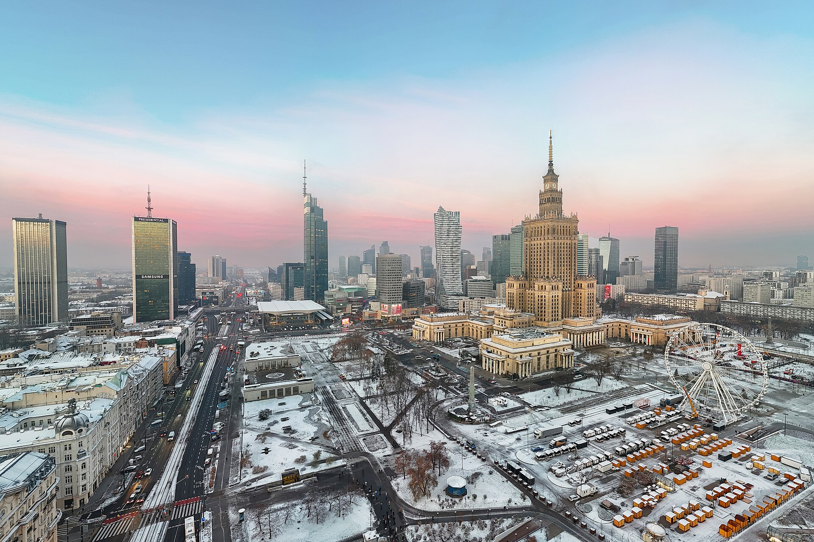

Uzbek Labour Migration to Poland: The Rise of a New European Destination
Over the past decade Poland has become one of the most important European destinations for Uzbek labour migrants. The war in Ukraine, Poland's labour shortage, and Uzbekistan's diversification policy shaped this new wave — with the numbers.

For decades Uzbek labour migration was directed mainly at Russia (and later South Korea and the Gulf). But after 2015, and especially from 2022, a new and fast-growing destination emerged — the European Union, and above all Poland. Today Uzbekistani citizens are one of the largest groups receiving work permits in Poland (Source: Notes from Poland; Prague Process — Uzbekistan).
The numbers: Polish work permits
According to Poland's labour ministry, in 2023 Uzbekistani citizens received 27,959 work permits, ranking 4th among all nationalities — after Indians (45,998), Nepalis (35,287), and Filipinos (29,154). In 2024 Uzbekistanis were issued roughly 26,000 permits and remained one of the largest groups, alongside citizens of the Philippines and Colombia (Source: Notes from Poland; Lexology — Employment of foreigners in Poland).
Poland became the second most important destination for Uzbek labour migration: in a single year Uzbekistanis obtained about 6,860 first-time residence permits in Poland. This reflects the broader expansion of Uzbek migration across Europe (Source: Prague Process — Uzbekistan; Notes from Poland).

Why Poland
Poland has faced a wide labour shortage in recent years. The number of work permits issued to citizens of Asia and Latin America rose fivefold in five years: from 54,863 in 2019 to 275,003 in 2023 — a 401% increase. The process accelerated especially after 2022, that is, after the war in Ukraine (Source: Notes from Poland).
The reason: the 2022 war reduced the number of workers coming to Poland from Ukraine, and Polish employers turned to other sources. As Notes from Poland reported: “The war in Ukraine has resulted in a decline in the number of workers coming to Poland from that country, leading Polish employers to look elsewhere.” Uzbekistanis, among other nationalities, began filling that gap (Source: Notes from Poland).
The Uzbek side: diversification
This growth is no accident. In recent years Uzbekistan has sought to diversify labour migration away from dependence on a single country (Russia). Organised recruitment through the Agency for External Labour Migration, language and vocational training programmes, and bilateral agreements aim to make the European route legal and orderly (Source: Prague Process — Uzbekistan; Medium — Uzbekistan as a Provider of Legal Working Labor).
A new diaspora takes shape
Unlike the large, older Uzbek community in Russia, the Uzbek community in Poland and the wider EU is young and began forming mainly after 2015. It consists largely of workers in construction, logistics, agriculture, and services. This is the newest geographic wave of Uzbek migration — after Russia, Korea, and the Gulf (Source: Prague Process — Uzbekistan; Notes from Poland).